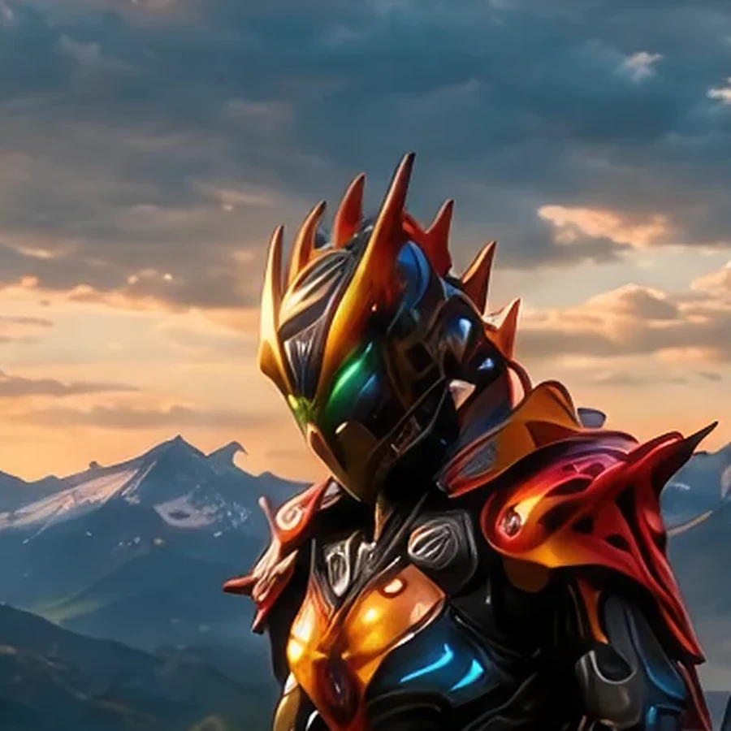
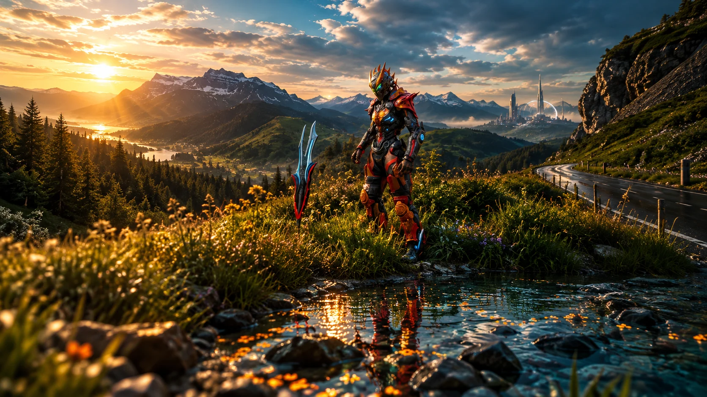
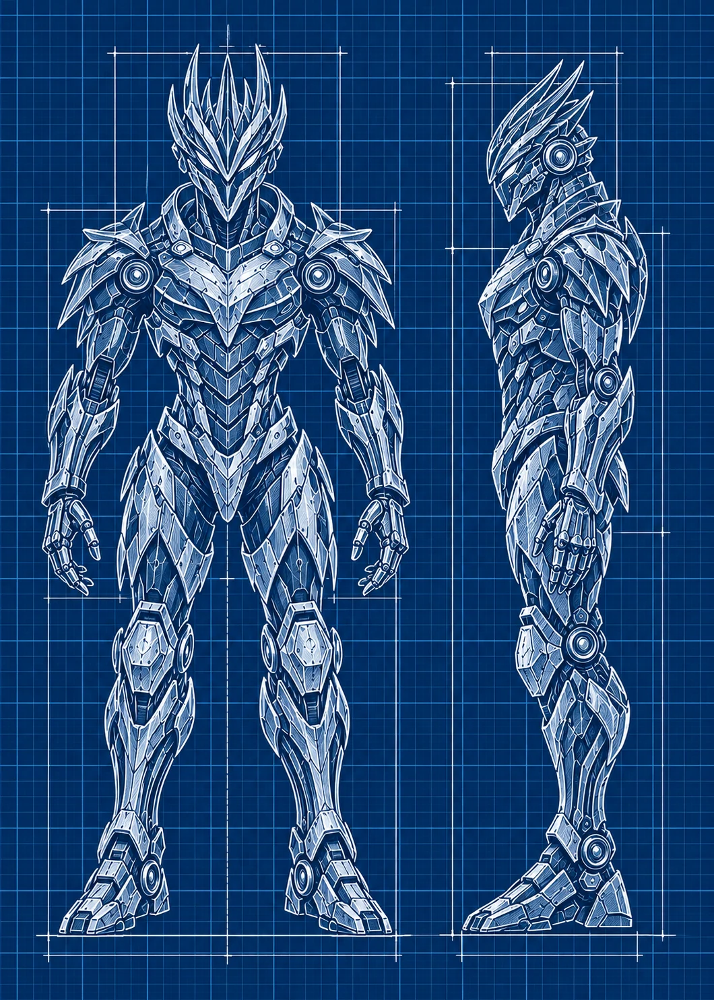

Field Observation
A luminous crystal cache rests among flowers in the right foreground.
 ©
©
GENEZYS ARCHIVE · EARTH 1 · Legionnaire
Momentum Analyst
Identity & combat record
Archive node 01 / 05

Archive record
Quenz calculates every battle a few seconds ahead of everyone else. The Haste Bloom lets Quenz strike twice where others strike once, stealing a moment from the enemy. The Order calls it patience. Quenz calls it being early.
Combat signature
Rapidly accelerates aging process: Performs 1 extra normal attack this round on a different target.
Genezys 03:06 ™&©2026LEGIONS
Recovered visual record
Archive node 02 / 05

Full frame available // rotate device to landscape
Technical archive
Archive node 03 / 05

Classified field intelligence
Archive node 04 / 05
FIELD REPORT // ARTIFACT SIGHTING
Field Observation
A luminous crystal cache rests among flowers in the right foreground.
Environment
Object Analysis
Key Findings
Motion archive
Archive node 05 / 05
Motion record not yet recovered